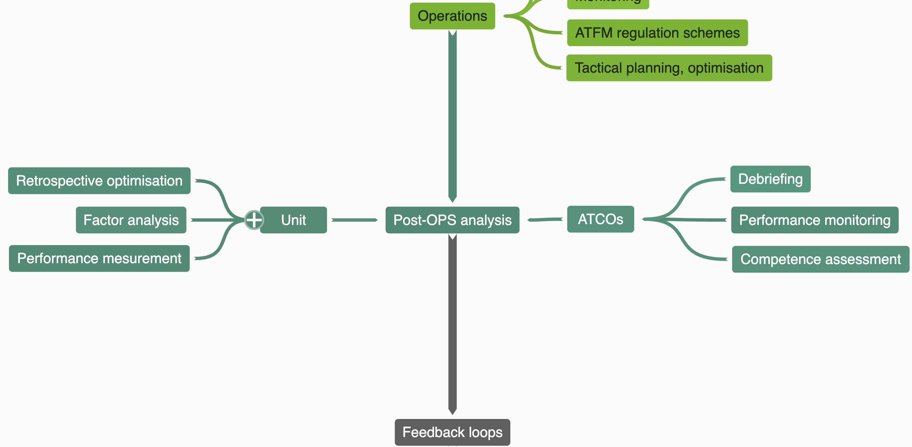
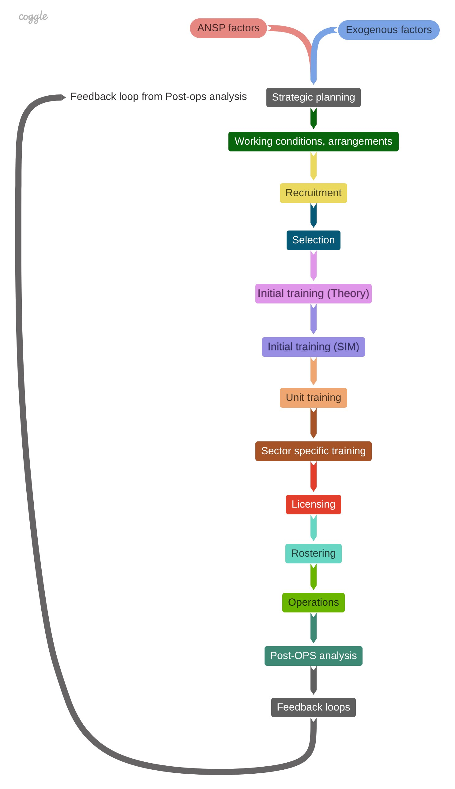

Post-operations learning
Operational experience can improve planning, recruitment, training and deployment when information flows back through the pipeline.
Post-operations analysis and feedback

Post-operations analysis represents a critical step in ensuring that operational experience is systematically translated into learning and improvement. After operational periods, structured assessments, debriefings and factor analyses allow performance to be examined against planned objectives. These activities help identify whether capacity limitations and performance deviations arise from airspace design, traffic patterns, staffing levels or from more fundamental aspects of operational concepts and working methods. Without a structured and evidence-based post-operations process, valuable insights risk being lost or addressed only through isolated local fixes.
In dynamic and cross-border environments, post-operation analysis cannot remain confined to a single organisation or airspace. Many operational outcomes result from interactions among multiple actors and across planning layers, making it essential that analysis be performed both locally and at the network level. ANSPs contribute detailed operational data and contextual understanding of day-to-day execution, while airports provide information on runway performance, surface constraints and local disruptions that influence airborne demand. Civil Aviation Authorities ensure that findings are assessed within the regulatory framework and that safety and compliance considerations are properly addressed.
EUROCONTROL, through its Network Management function, plays a central role in enabling this collective analysis by providing the wider network perspective needed to understand how local actions and constraints propagate across the system. Aggregated, network-wide analysis enables identification of systemic patterns, recurring bottlenecks, and interdependencies that are not visible at the local level, helping stakeholders distinguish between isolated events and structural issues that require coordinated action.
For post-operations analysis to be truly effective, access to data is a key enabler. All relevant parties need timely, transparent access to operational, traffic, capacity, and performance data to build a shared understanding of what happened and why. This applies not only to ANSPs, airports, CAAs, and the Network Manager, but also to third parties such as consulting companies, research organisations, and professional analysts who can bring independent expertise and advanced analytical methods. Broader access to data enables deeper analysis, alternative perspectives and more innovative solutions.

Feedback loops provide the closing link in the ATCO management cycle, transferring operational experience, lessons learned, and data back to the start of the process, where they become inputs for strategic planning. In fact, despite the simplistic visual representation of our logical model, feedback loops should be connected to each step of the process, allowing continuous reflection and development.
Effective feedback loops depend on broad, data-driven collaboration. Conclusions from post-operations analysis should be shared among all relevant parties and translated into agreed actions, such as adjustments to training curricula, refinements to endorsement and validation approaches, updates to sectorisation assumptions or changes to planning and coordination procedures. Where analysis highlights uneven demand or recurring imbalances, it may also open opportunities for smarter resource sharing and coordinated solutions across organisational boundaries.
By embedding post-operations analysis within a transparent, data-enabled and collaborative governance framework, the ATM system can move beyond reactive problem-solving toward continuous improvement. When Network Manager, CAAs, airports, ANSPs and qualified third parties work from a common evidence base, operational experience becomes a powerful driver for harmonisation, resilience and more efficient use of resources in a dynamic, cross-border airspace environment.
Learning across the pipeline
Post-Ops Analysis encompasses the processes through which operational, training and workforce-performance information is collected, assessed and fed back into the management of the ATCO management cycle. It includes the monitoring of training outcomes, operational performance and workforce indicators, as well as the mechanisms used to identify lessons learned and support continuous improvement across recruitment, selection, training and operations.
Post-Ops Analysis received Low Incidence and Low Severity classifications. Stakeholders nevertheless recognised its supporting role in improving the pipeline through systematic use of performance information.
The consultation process revealed broad agreement among ANSPs regarding the value of evidence-based decision-making and continuous improvement. Stakeholders generally acknowledged that better use of operational and training data could support improvements in recruitment, selection and training processes. However, many ANSPs also recognised that the necessary data are not always available or analysed consistently.
Differences emerged regarding the maturity of data-management and performance-monitoring practices across the network. While some ANSPs systematically collect and analyse information across multiple stages of the ATCO management cycle, others operate with more limited datasets or focus primarily on high-level performance indicators, making benchmarking and root-cause analysis more difficult.
The challenges identified within Post-Ops Analysis are primarily associated with the availability, consistency and use of performance information. Stakeholders frequently highlighted that valuable information exists throughout the ATCO management cycle but is not always captured, integrated or analysed in a manner that supports continuous improvement.
Challenges reported in Post-Ops Analysis (Source: Consortium assessment)
| ID | Challenge | Rationale | ANSPs reporting |
|---|---|---|---|
| O-PO.1 | Limited availability of integrated lifecycle data | Information generated through recruitment, selection, training and operations is not always systematically stored or interconnected, limiting analytical opportunities. | 4 (24%) |
| O-PO.2 | Lack of a common framework for measuring training success | Differences in the way training success is defined and measured across ANSPs make benchmarking and comparison of performance indicators difficult. | 3 (18%) |
| O-PO.3 | Statistical volatility of performance indicators | Small trainee cohorts can result in significant year-to-year fluctuations in performance indicators, making it difficult to distinguish structural trends from statistical variation. | 3 (18%) |
| O-PO.4 | Limited root-cause analysis of training outcomes | Although training failures are generally monitored, the underlying causes and the stage at which they occur are not always analysed systematically, reducing opportunities for targeted improvements. | 3 (18%) |
The challenges identified within Post-Ops Analysis differ from those observed in most other key areas, as they do not directly affect workforce production or workforce utilisation. Instead, they influence the ability of organisations to understand the causes of workforce-related challenges and to improve the effectiveness of the ATCO management cycle over time.
The consultation revealed that several ANSPs lack access to sufficiently detailed or integrated information regarding recruitment, selection, training and operational performance. Stakeholders highlighted that performance indicators are often considered in isolation, making it difficult to establish clear links between early-stage decisions and later workforce outcomes. In addition, differences in definitions and measurement approaches limit the ability of ANSPs to benchmark their performance against other organisations.
A recurring theme throughout the consultation was the difficulty of moving beyond the identification of outcomes towards an understanding of their underlying causes. Several stakeholders reported that training success rates are monitored regularly, but that limited analysis is undertaken to determine why trainees succeed or fail at different stages of the pipeline. As a result, opportunities for targeted improvements may remain unidentified.
Taken together, these findings suggest that Post-Ops Analysis functions primarily as an enabling capability. While it does not directly determine future ATCO availability, improvements in this area have the potential to strengthen decision-making and increase the effectiveness of interventions implemented elsewhere in the lifecycle.
The identified solutions focus on improving the collection, integration and use of performance information across the ATCO management cycle. Rather than addressing workforce shortages directly, these measures seek to strengthen the evidence base supporting recruitment, selection, training and operational decisions.
Main solutions for Post Ops Analysis (Source: Consortium assessment)
| ID | Solution | Challenges addressed | Time horizon | Control over the solution | Model variables affected |
|---|---|---|---|---|---|
| O-PO.BP.1 | Monitor training success consistently across the entire ATCO pipeline | O-PO.1 O-PO.2 | Medium | Internal | Success rate |
| O-PO.BP.2 | Adopt a lifecycle-wide approach to performance improvement | O-PO.4 | Medium | Internal | Success rate |
| O-PO.BP.3 | Develop integrated data systems across the ATCO management cycle | O-PO.1 O-PO.4 | Medium | Internal + Technology | Success rate |
| O-PO.BP.4 | Implement systematic root-cause analysis of training outcomes | O-PO.1 O-PO.4 | Medium | Internal | Success rate |
| O-PO.FP.1 | Introduce data-driven competency maintenance and retraining mechanisms | O-PO.1 | Medium | Internal | Success rate |
| Training duration | |||||
| O-PO.FP.2 | Monitor training success consistently across the entire ATCO pipeline | O-PO.3 O-PO.4 | Long | Internal + External | Success rate |
The identified solutions seek to strengthen the feedback mechanisms linking different stages of the ATCO management cycle. Accordingly, most measures influence the Success Rate variable, while a smaller number also affect Training duration by enabling earlier identification of issues and more targeted interventions.
Several best practices focus on improving the visibility of performance across the workforce pipeline. Measures such as integrated data systems, lifecycle-wide monitoring and systematic root-cause analysis seek to provide a more complete understanding of how recruitment, selection, training and operational processes interact. These approaches directly address the challenges associated with fragmented information and limited analytical capability.
A second group of measures aims to improve comparability and learning across organisations. Common benchmarking frameworks and standardised performance indicators would enable ANSPs to compare outcomes on a more consistent basis and identify practices associated with stronger performance. In parallel, data-driven retraining and competency-management approaches could allow interventions to be targeted more precisely, improving both training efficiency and workforce development.
The consultation consistently highlighted that many workforce challenges are interconnected and cannot be understood by examining individual stages of the lifecycle in isolation. Consequently, the most significant contribution of Post-Ops Analysis lies not in increasing controller numbers directly, but in improving the ability of organisations to identify, understand and address the causes of workforce constraints elsewhere in the system.
Taken together, the identified solutions position Post-Ops Analysis as a supporting function for continuous improvement. While the direct impact on ATCO availability may be more limited than in other key areas, the benefits of improved data collection, analysis and feedback have the potential to enhance the effectiveness of actions implemented throughout the ATCO management cycle.